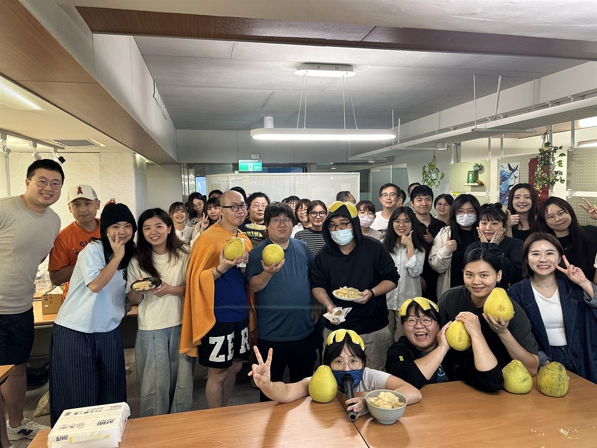

代理人：李赫宰 (B123)代理您的簽核工作
CALENDAR
行事曆
日期TW台灣JP日本
教師節秋分の日
——
——
——
——
BIBIAN UPDATES
Bibian 動態

活動花絮
中秋活動｜剝柚子大賽
同仁一起挑戰剝柚子速度，看看本次活動的精彩紀錄。
QUICK ACCESS
快速申請
EMPLOYEE GUIDE
員工指南
快速查找公司、系統、制度、福利與日常工作資訊。
HOLIDAY CALENDAR
台灣／日本國定假日
日期星期台灣日本
三—JP秋分の日
一TW教師節—
六TW國慶日—
二—JP文化の日
一—JP勤労感謝の日
※ Demo 假日資料；正式系統將由假日資料來源同步更新。
DELEGATION SCHEDULE
我的代理
代理資訊分為「您休假時由誰代理」及「您需要代理誰」，生效期間將持續顯示於總覽。
被代理人：李東海 (B125)目前有 2 筆簽核案件待處理
※ 本頁為 Roadmap 完整導入後的情境示意；件數與內容為 Demo 資料，用於呈現未來員工入口整合情境。